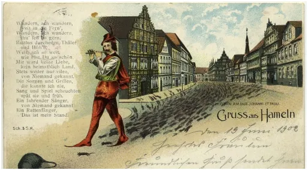
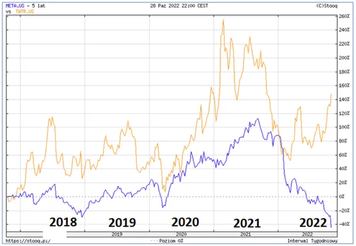
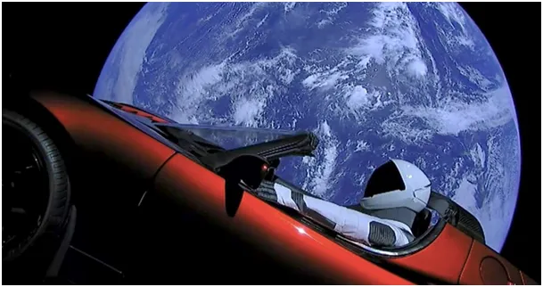

Szczurołap na giełdzie
Masowe media dają możliwość kreacji autorytetów wprost seryjnie. Kilka miliardów ludzi zna i podziwia Elona Muska. Ten facet wysłał samochód elektryczny w kosmos. Och!
Gdy kilkanaście lat temu USA zamknęły swój program kosmiczny i regularnie korzystają komercyjnie z rosyjskich rakiet do utrzymania Międzynarodowej Stacji Kosmicznej i wielu innych projektów przypomniałem sobie historię jak to amerykański Ford w 1918 roku rozpoczął uprzemysławianie nowopowstałego, komunistycznego Związku Radzieckiego. To były wielkie projekty, potężne fabryki maszyn i silników. Wspominam o tym, aby przypomnieć. że nawet największe imperia nie są spójne, że w ich poprzek przechodzą linie podziałów nie widoczne dla zwykłych ludzi. W USA pod dywanem trwa pojedynek buldogów i możemy zobaczyć tylko jak faluje dywan.

Wrócimy do programu kosmicznego w USA. Ostatnia dekada to obraz atomowego imperium, które nie ma czym wystrzelić satelity meteorologicznego a zdolny młody Elon w garażu skręca rakiety nowej generacji, któż by mu nie zaufał! Nie trzeba specjalnej wyobraźni, aby zrozumieć, że projekt Elona jest projektem imperium a Elon to fajny gość na fasadzie.

Po pandemicznych żniwach w biznesach internetowych mamy wyraźne przetasowanie. Facebook (Meta) nie radzi sobie z kosztami i jego akcje lecą w otchłań, tymczasem Elon co jakiś czas "kupuje" Tweetera. Teraz to już kupuje za pieniądze, media wprost transmitują jak poszczególne banki realizują przelewy, brakuje tylko zdjęć z workami pełnymi dolarów. Miliony małych inwestorów powtarza ruchy swego guru i jak szczury, krok w krok, wychodzą ze swym kapelmistrzem z zasobnego miasta w szczere pole. Na rynku finansowym nazywa się to zaganianiem leszczy do sieci.

Tweeter będzie kluczowym narzędziem w kolejnych wyborach prezydenckich w USA, przed nami seria "odblokujemy Trumpa", "Ameryka to wolność" itp. itd.
Paweł Klimczewski